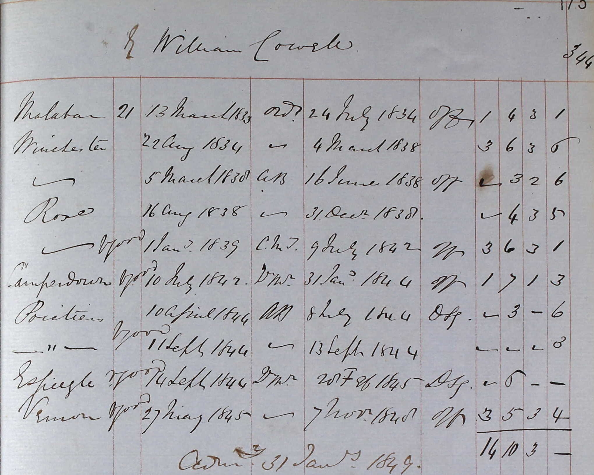

William Castle Cowell 1811 - c1877
[ Home ] | [ Calendar ] | [ Surnames Index ] | [ Census Index ] | [ Family History ]A mariner and the child of William Cowell and Elizabeth Wales, William Cowell, the first cousin four-times-removed on the mother's side of Nigel Horne, was born in St Peters, Thanet, Kent, England on Feb 10, 18111, was baptized there on Mar 17, 1811 and also married Sarah Pettit (with whom he had 2 children: Sarah Ann and Susannah Elizabeth) there on Dec 25, 1855.
During his life, he was living at 1 Nelson Place, St Peters, Thanet, Kent, England on Apr 7, 18615 and on Apr 2, 18714. He served in the navy from 1833 to 1855 (Royal Navy).
He died c. May 1877 in Thanet2 and was buried in St Peters on Jun 7, 18773.
Parents
- William Castle was born on Apr 8, 1778
- Elizabeth was born c. 1768
Children
- Sarah Ann was born on Feb 23, 1857
- Susannah Elizabeth was born c. Mar 1860
Citations
- Kent Baptisms - Findmypast
- England & Wales deaths 1837-2007 - Findmypast
- England Deaths & Burials 1538-1991 - Findmypast
- 1871 England, Wales & Scotland Census - Findmypast (was age 61 and the head of the household)
- 1861 England, Wales & Scotland Census - Findmypast (was age 49 and the head of the household)
Media
William Cowell - Naval Record 1

William Cowell - Naval Record 1
Kent, Canterbury Archdeaconry baptisms 1538-1912 - GBPRS/CANT/B/96346998
England & Wales deaths 1837-2007 - BMD/D/1877/2/AZ/000076/205
England Marriages 1538-1973 - R_848292207
Kent, Canterbury Archdeaconry marriages 1538-1928 - GBPRS/CANT/M/97018537/1
1871 England, Wales & Scotland Census - GBC/1871/0014311078
England Deaths and Burials 1538-1991 Transcription - R_276794290
England Deaths and Burials 1538-1991 Transcription - R_276604569
1861 England, Wales & Scotland Census - GBC-1861-0003552700
England Births & Baptisms 1538-1975 - R_883212576
Family Tree

Generated by ged2site. Last updated on Jun 11, 2024